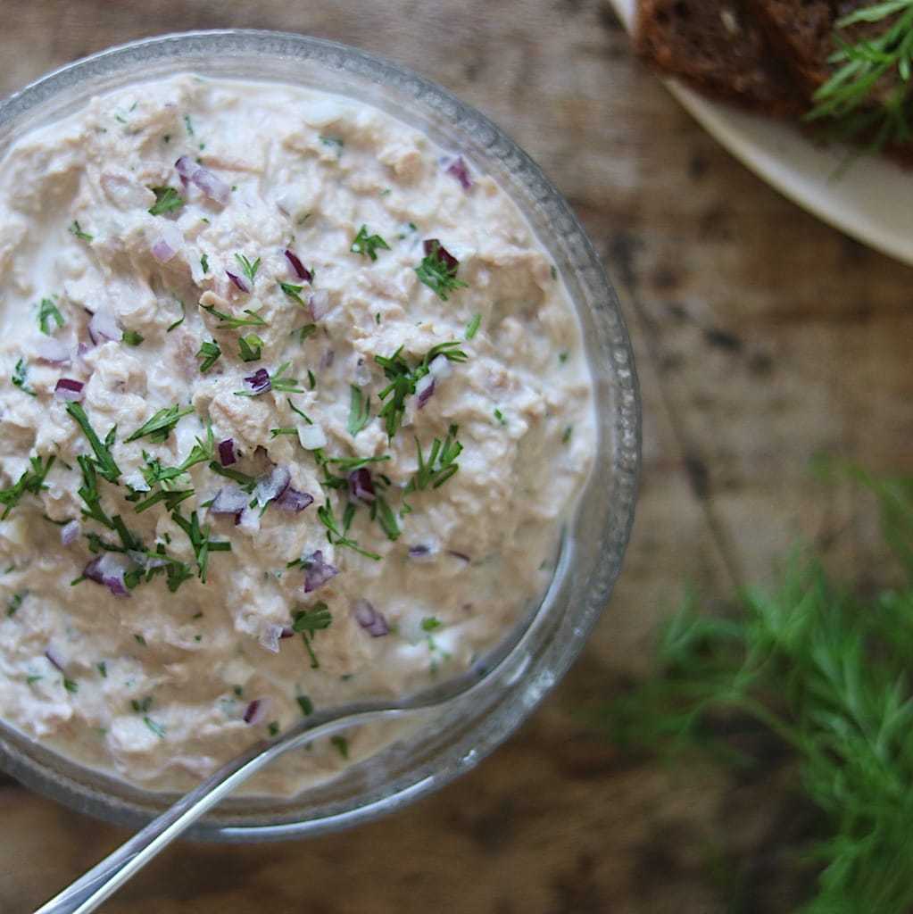

Tuna Salad

Ingredients
2 cans of tuna
2 tbsp. sour cream (skyr, natural yoghurt etc.)
1 tbsp. mayonnaise
1/2 small red onion
2 tbsp. lemon juice
Possibly. dill or chives
Here's how you do it
Pour the tuna into a bowl together with the sour cream and mayonnaise and mash it well
Finely chop the red onion and add it to the tuna salad
Season to taste with salt, pepper and lemon juice